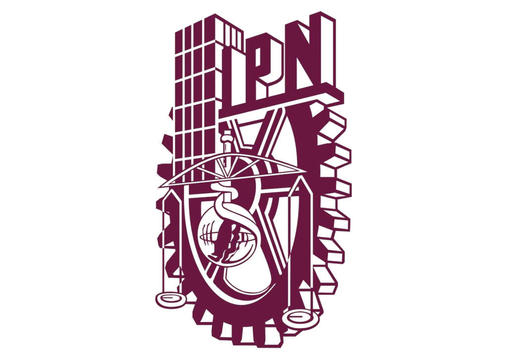

Himno del Instituto Politécnico Nacional
En esta sección se podrá escuchar el Himno del Instituto Politécnico Nacional.
Audio del Himno
Letra del Himno
Politécnico, fragua encendida con la chispa del genio creador, en ti forja su nueva estructura nuestra noble y pujante nación. Mueve al hombre tu fe constructiva, se oye el ritmo de su despertar, sinfonía de las urbes fabriles, alma agreste de un himno rural. En la aurora de un día venturoso te dio vida la Revolución; una estrella te puso en las manos, ¡que no apague su limpio fulgor! Corazón valeroso y ardiente que edificas baluarte de paz, solidaria su acción con tus filas, vive el pueblo tu hermosa verdad. Su libertad México crea, surge la Patria, nace la luz; nos convoca tu voz Politécnico, nos conduce tu amor, juventud. Su libertad México crea, surge la Patria, nace la luz; nos convoca tu voz Politécnico, nos conduce tu amor, juventud.